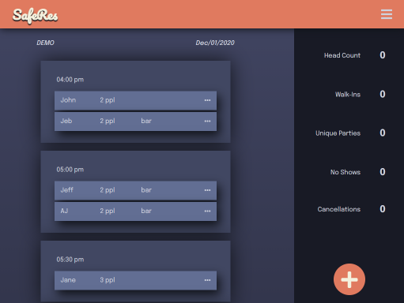
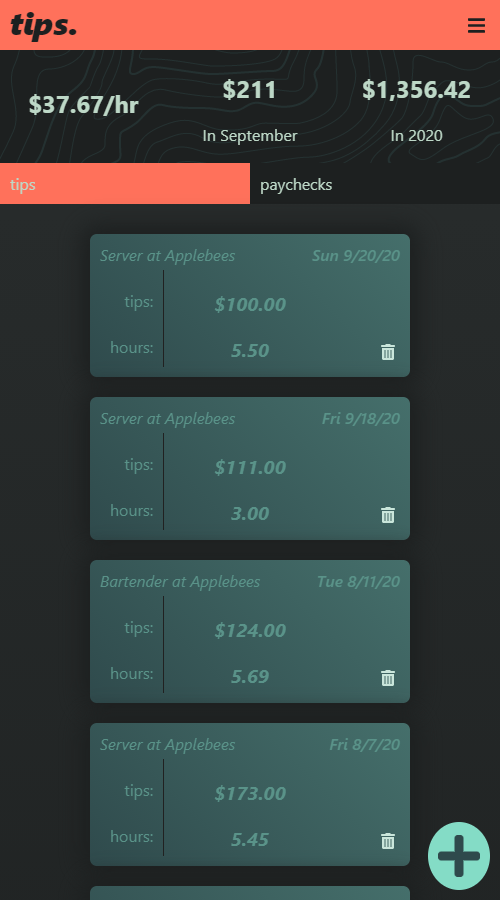
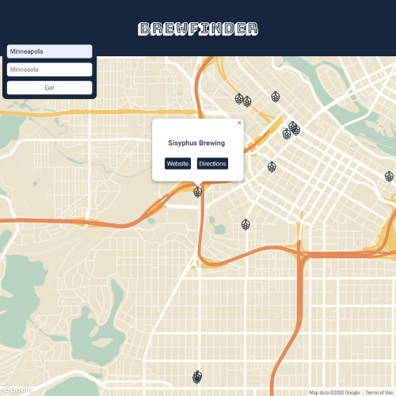

Hello! This is AJ Bates
I am an aspiring Web Develepor specializing in JavaScript, and Jquery.
Get in touch
Projects
SafeRes
The pandemic broght on a lot hurdles to overcome in the service industry. One big issue was state mandated reservations for all restaurants. I saw this as a great opportunity to create a user experience we haven't taken advantage of at the bar we worked at. Not only was this a way to contact people for there reservations, it also makes it easier for us to contact people if there was an outbreak.
tips.
An app designed to help servers and bartenders keep better track of their income. I have worked in the service industry since I was twelve years old. One thing I didn't realize for a long time, is that if you actually know how much money you are making, the easier it is to save money. So I built this app to empower people in the service industry to take control of their income.
BrewFinder
A relatively simple app that utilizes the google map API to place data from an open-source brewery database. The user searches for a city and the app fetches data from the brewery database. That data is then used to place markers on the map. The user can then click on a marker to get the relevant information.
About Me
I am currently a student in the Full Stack Software Engineering program with
Thinkful. I am excited to continue learning and sharpening my skills as a web
developer and problem solver. I love problem solving and the constant
challenges that are brought with learning JavaScript and all of the related
tech.
Having worked in a restaurant and in the service industry for
essentially my whole life, I work great in a team, and especially
great in high stress situations. I can't wait to work with a great team
of programmers and developers to apply my knowledge to a different
challenge everyday.
My love for technology is what ultimately pushed me to get into web development. I enjoy video games (built multiple PC's), movies, and music. When I'm not coding you might find me bartending (I love beer), or going to see some live music. Just like every other millennial I collect vinyl and shoes.